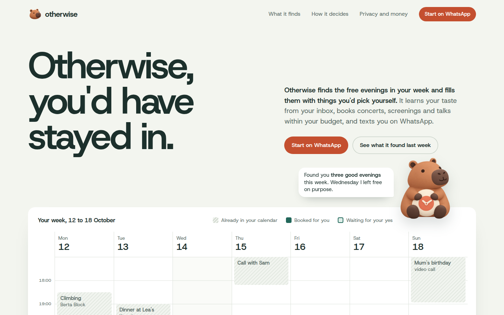
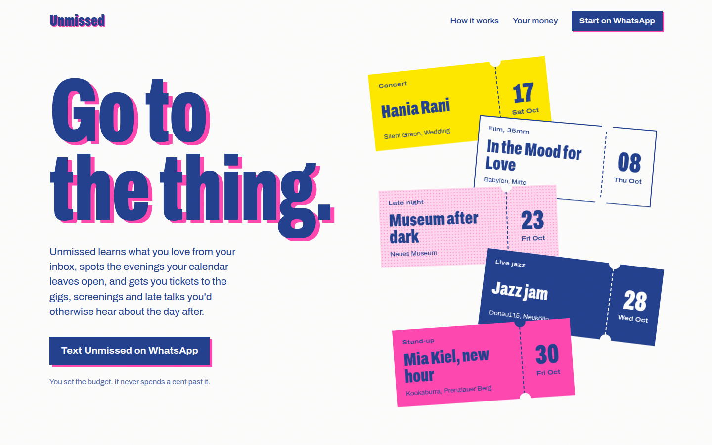
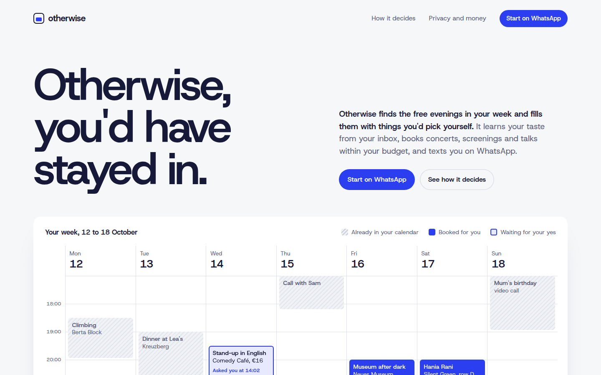
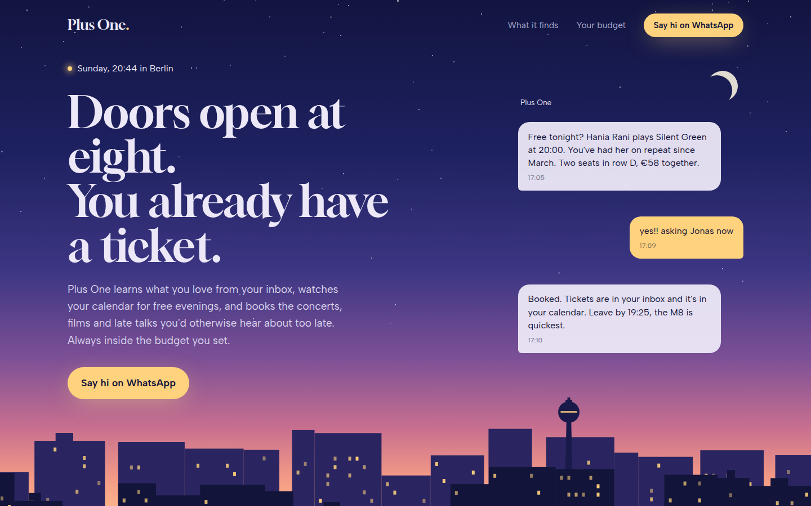

The Otherwise calendar, the Soft 3D and Pocket 3D capybara, real Berlin picks, one palette.

Riso-printed ticket stubs. Loud, joyful, tactile.

Your week filling itself. Calm, precise, with an interactive budget rule.

Dusk over Berlin, windows lighting up. Warm and cinematic.